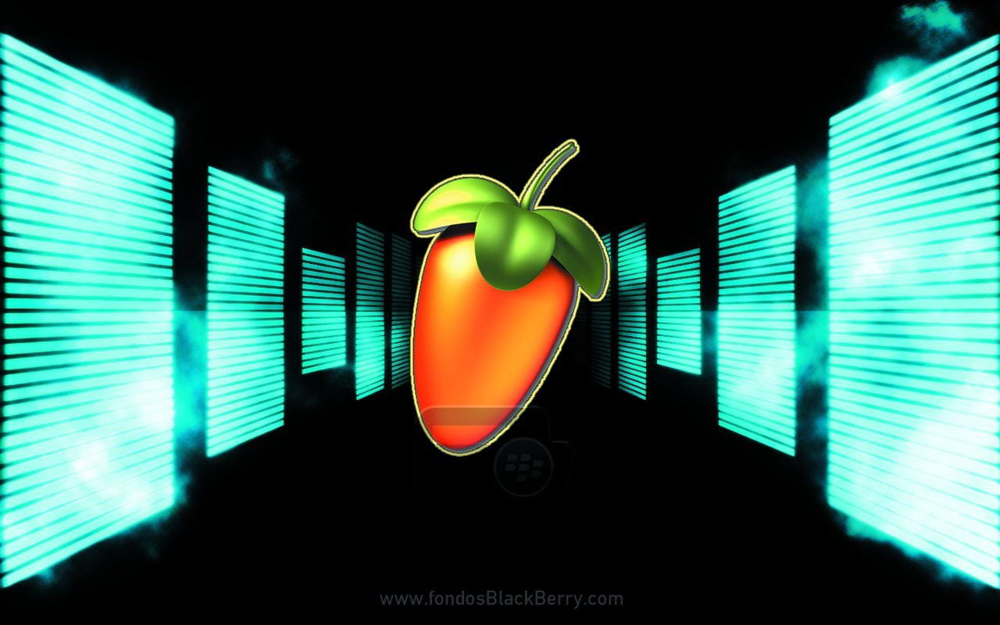
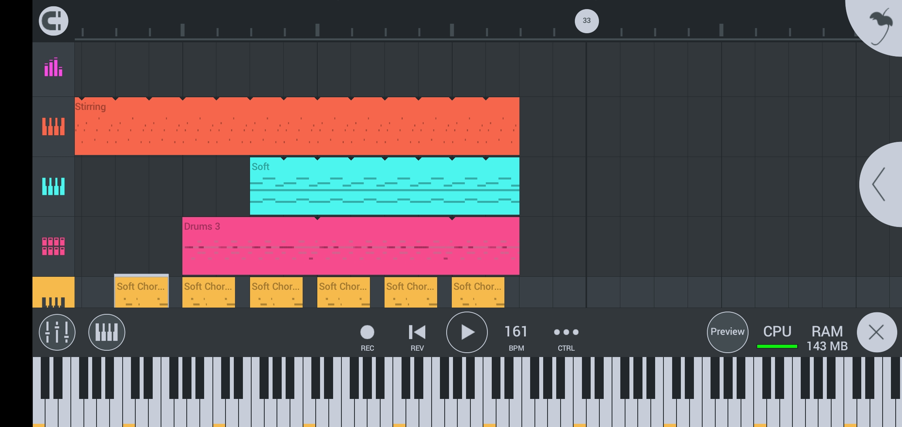
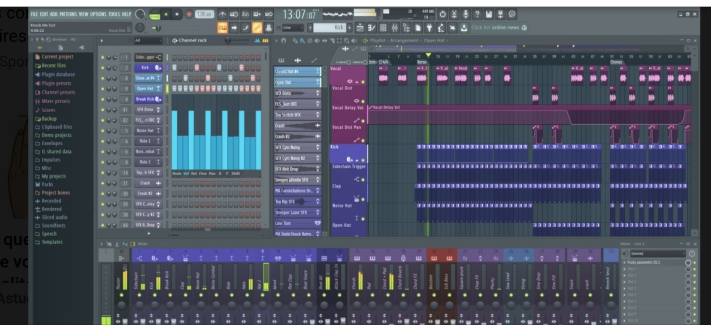

FL STUDIO
Definition
FL Studio est un logiciel de production de musique créé en 1997 par Didier Dambrin pour la firme
belge Image-Line.Ce logiciel comprend un éditeur audio,un sequenceur basé sur le concept de patterns
Informations
- Première Version: FruityLoops 1.0.0 (18 décembre 1997)
- Dernière Version: 21.0.0 (6 décembre 2022)
- Système d'exploitation: Windows,Android,IOS et macOS
- Environnement: Microsoft Windows,Mac OSX
Exemples
FL Studio Mobile

FL Studio sur PC
